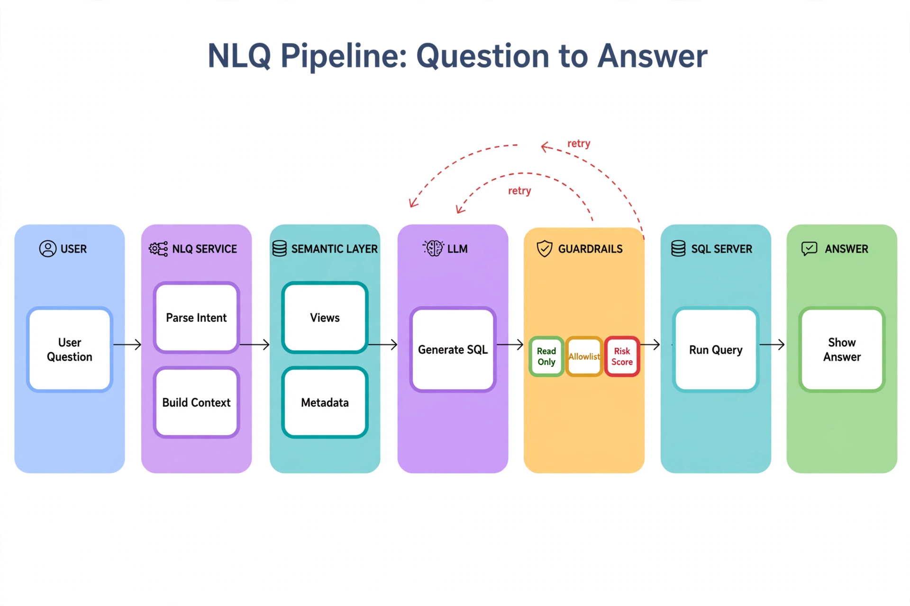

Chapter 21: Natural Language to SQL for Self-Service Analytics
Every DBA knows the pattern: a product manager needs "revenue by region last quarter," files a ticket, and waits three days while a DBA acts as a human query compiler. Multiply that by dozens of weekly ad-hoc requests and you have one of the largest hidden costs in data operations. Natural language to SQL (NLQ) promises to break this bottleneck — but the gap between a five-table demo and a production system the business trusts is enormous, and most of that gap is database engineering, not model capability. This chapter builds an NLQ layer on SQL Server that is safe, accurate, and governable: a metadata contract from your catalog views, a semantic layer of curated views, read-only execution, and an evaluation harness that keeps the system honest as your schema evolves.
---
Why Naive Text-to-SQL Fails on Real Schemas
Point a general-purpose LLM at your production database with a raw schema dump and ask a business question. What comes back is usually syntactically valid, confidently formatted — and wrong in ways that are expensive to catch. The failure modes are remarkably consistent across organizations.
Ambiguous naming. Your schema has customer_id, cust_id, and bill_to_customer_id across different tables. The model guesses which one the user means. It guesses wrong roughly as often as a coin flip when three plausible candidates exist.
Business logic lives in people's heads. "Active customers" might mean status = 'A' on one table, or a customer with an order in the last 90 days, or a customer not flagged in the churn table. No schema dump contains this definition. The model invents one.
Join path explosion. A 400-table schema has thousands of plausible join paths between any two entities. Foreign keys narrow it, but the model still picks the wrong bridge table with depressing regularity when multiple paths exist.
Performance blindness. Generated SQL is logically correct but physically catastrophic: unfiltered scans of billion-row tables, accidental cross joins through missing predicates, SELECT * against wide tables with LOB columns. One bad generated query can saturate tempdb during business hours.
The lesson from every failed NLQ pilot is the same: accuracy does not come from a better model prompt. It comes from constraining the problem — curating what the model can see, what it can touch, and what vocabulary it is allowed to use. The DBA owns all three constraints, which is why NLQ is a DBA project wearing an AI costume.
---
The Metadata Contract: Teaching the Model Your Schema
The single highest-leverage input to any NLQ system is a curated schema document. Not a raw dump of INFORMATION_SCHEMA — a document you generate, filter, and annotate. SQL Server's catalog views give you everything needed to build it programmatically.
Step 1: extract the curated table and column inventory. Exclude system objects, staging tables, and audit tables the model should never know about. Include data types and nullability so the model writes correct predicates:
-- Curated schema inventory for the NLQ metadata contract
-- Maintain the exclusion list in a config table: nlq.nql_excluded_objects
SELECT
s.name AS schema_name,
t.name AS table_name,
c.name AS column_name,
ty.name AS data_type,
CASE WHEN c.max_length = -1 THEN 'MAX'
ELSE CAST(c.max_length AS VARCHAR(10)) END AS max_length,
c.is_nullable,
c.is_identity,
ep.value AS business_description
FROM sys.tables t
JOIN sys.schemas s ON s.schema_id = t.schema_id
JOIN sys.columns c ON c.object_id = t.object_id
JOIN sys.types ty ON ty.user_type_id = c.user_type_id
LEFT JOIN sys.extended_properties ep
ON ep.major_id = t.object_id
AND ep.minor_id = c.column_id
AND ep.class = 1
AND ep.name = 'MS_Description'
WHERE t.is_ms_shipped = 0
AND s.name NOT IN ('stg', 'audit', 'etl', 'tmp')
AND NOT EXISTS (
SELECT 1 FROM nlq.excluded_objects x
WHERE x.schema_name = s.name AND x.object_name = t.name
)
ORDER BY s.name, t.name, c.column_id;Step 2: extract join paths from foreign keys. This is what stops the model from inventing joins. Every relationship the model is allowed to use should be declared here:
-- Declared join paths: the only relationships the NLQ model may use
SELECT
fk.name AS relationship_name,
OBJECT_SCHEMA_NAME(fk.parent_object_id) AS child_schema,
OBJECT_NAME(fk.parent_object_id) AS child_table,
STRING_AGG(pc.name, ', ') WITHIN GROUP (ORDER BY fkc.constraint_column_id) AS child_columns,
OBJECT_SCHEMA_NAME(fk.referenced_object_id) AS parent_schema,
OBJECT_NAME(fk.referenced_object_id) AS parent_table,
STRING_AGG(rc.name, ', ') WITHIN GROUP (ORDER BY fkc.constraint_column_id) AS parent_columns
FROM sys.foreign_keys fk
JOIN sys.foreign_key_columns fkc ON fkc.constraint_object_id = fk.object_id
JOIN sys.columns pc ON pc.object_id = fkc.parent_object_id
AND pc.column_id = fkc.parent_column_id
JOIN sys.columns rc ON rc.object_id = fkc.referenced_object_id
AND rc.column_id = fkc.referenced_column_id
GROUP BY fk.name, fk.parent_object_id, fk.referenced_object_id
ORDER BY child_schema, child_table;Step 3: annotate with business definitions using extended properties. This is where "active customer" stops being a guess. Your data stewards (or you, in a first pass) attach MS_Description values to the columns and views that carry business meaning:
-- Attach business definitions the NLQ model will read verbatim
EXEC sys.sp_addextendedproperty
@name = N'MS_Description',
@value = N'Net revenue in USD after refunds, chargebacks, and tax. One row per order line.',
@level0type = N'SCHEMA', @level0name = N'reporting',
@level1type = N'VIEW', @level1name = N'vw_order_revenue';
EXEC sys.sp_addextendedproperty
@name = N'MS_Description',
@value = N'Customer is active if they placed an order in the trailing 90 days. Use vw_active_customers instead of filtering this column directly.',
@level0type = N'SCHEMA', @level0name = N'sales',
@level1type = N'TABLE', @level1name = N'customers',
@level2type = N'COLUMN', @level2name = N'status';Regenerate this contract nightly and version it — when the NLQ system gives a wrong answer, the versioned contract tells you exactly what the model saw.
---
The Semantic Layer: Views as the Query Contract
The metadata contract tells the model what exists. The semantic layer tells it what to use. The rule is simple: the NLQ system never queries base tables directly. It queries a curated set of views in a dedicated schema (conventionally reporting), each one encoding the joins, filters, and business definitions for one analytical subject area.
This single constraint eliminates three of the four failure modes from the previous section. Ambiguous naming disappears because the view exposes one canonical column name. Business logic is baked into the view definition instead of guessed. Join paths are pre-resolved by whoever wrote the view. What remains is the translation of "last quarter by region" into GROUP BY and date predicates — the part LLMs are genuinely good at.
-- Semantic layer view: the NLQ system's unit of truth for revenue questions
CREATE OR ALTER VIEW reporting.vw_order_revenue AS
SELECT
o.order_id,
o.order_date,
DATEPART(QUARTER, o.order_date) AS order_quarter,
YEAR(o.order_date) AS order_year,
r.region_name,
c.customer_name,
c.customer_segment,
ol.line_net_amount_usd AS net_revenue_usd,
p.product_category
FROM sales.orders o
JOIN sales.order_lines ol
ON ol.order_id = o.order_id
JOIN sales.customers c
ON c.customer_id = o.customer_id
JOIN geo.regions r
ON r.region_id = c.region_id
JOIN catalog.products p
ON p.product_id = ol.product_id
WHERE o.order_status NOT IN ('CANCELLED', 'FRAUD_HOLD')
AND ol.is_refund = 0;
GO
-- The NLQ contract only lists views in the reporting schema
SELECT
s.name AS schema_name,
v.name AS view_name,
ep.value AS business_description,
(SELECT COUNT(*) FROM sys.columns c
WHERE c.object_id = v.object_id) AS column_count
FROM sys.views v
JOIN sys.schemas s ON s.schema_id = v.schema_id
LEFT JOIN sys.extended_properties ep
ON ep.major_id = v.object_id AND ep.minor_id = 0
AND ep.class = 1 AND ep.name = 'MS_Description'
WHERE s.name = 'reporting'
ORDER BY v.name;A healthy semantic layer for a mid-size business is 15 to 40 views. Each view gets an owner, a refresh SLA if it is materialized or indexed, and a description. When a user asks a question no view can answer, that is a signal to extend the semantic layer — not a signal to let the model improvise against base tables. Track unanswerable questions in a log; they are your semantic-layer backlog, prioritized by frequency.
---
Safety Architecture: Read-Only by Construction
An LLM generating SQL against production is a privileged-code-execution system, and it must be engineered like one. Defense in depth, four layers:
Layer 1 — Least-privilege execution login. The NLQ service connects with a dedicated login that has db_datareader on the reporting schema only, and explicit DENY on everything else. Even if every other layer fails, this login physically cannot modify data.
-- Provision the NLQ execution principal: read-only, reporting schema only
USE analytics;
GO
CREATE LOGIN nlq_service WITH PASSWORD = '/* from vault, rotated quarterly */';
CREATE USER nlq_service FOR LOGIN nlq_service;
-- Grant read on the semantic layer only
GRANT SELECT ON SCHEMA::reporting TO nlq_service;
-- Belt and suspenders: deny everything else explicitly
DENY SELECT ON SCHEMA::sales TO nlq_service;
DENY SELECT ON SCHEMA::hr TO nlq_service;
DENY SELECT ON SCHEMA::finance_raw TO nlq_service;
DENY EXECUTE ON SCHEMA::dbo TO nlq_service;
GO
-- Cap runaway generated queries at the engine level for this login
-- (Query Governor cost limit in seconds of estimated cost)
-- Applied via a logon trigger or Resource Governor workload group instead:
-- CREATE WORKLOAD GROUP nlq_group WITH (REQUEST_MAX_CPU_TIME_SEC = 120)
-- and classify the nlq_service login into it (see Chapter 24).Layer 2 — Statement validation before execution. Never execute model output directly. Parse it first: it must be a single SELECT (or WITH...SELECT) statement, reference only allowlisted views, and contain no forbidden keywords. The Python validator below runs in the service tier, before anything reaches SQL Server:
import re
FORBIDDEN_KEYWORDS = {
'INSERT', 'UPDATE', 'DELETE', 'MERGE', 'DROP', 'ALTER', 'CREATE',
'TRUNCATE', 'GRANT', 'DENY', 'REVOKE', 'EXEC', 'EXECUTE',
'XP_', 'SP_', 'OPENROWSET', 'OPENDATASOURCE', 'BULK',
}
ALLOWED_SCHEMAS = {'reporting'} # NLQ may only touch the semantic layer
def validate_generated_sql(sql: str, allowed_views: set[str]) -> str:
"""Validate LLM-generated SQL. Returns cleaned SQL or raises ValueError."""
cleaned = sql.strip().rstrip(';')
# Single statement only: reject stacked queries outright
if re.search(r';\s*\S', cleaned):
raise ValueError("Multiple statements detected; refusing to execute.")
upper = cleaned.upper()
first_word = re.match(r'\s*(WITH|SELECT)\b', upper)
if not first_word:
raise ValueError("Only SELECT / WITH...SELECT statements are permitted.")
for kw in FORBIDDEN_KEYWORDS:
if re.search(rf'\b{kw}\b', upper):
raise ValueError(f"Forbidden keyword detected: {kw}")
# Every referenced object must be an allowlisted reporting view
refs = set(re.findall(r'FROM\s+(?:\[?(\w+)\]?\. )?\[?(\w+)\]?', upper))
for schema, obj in refs:
schema = schema or 'DBO'
if schema != 'REPORTING' or obj not in {v.upper() for v in allowed_views}:
raise ValueError(f"Reference not in NLQ allowlist: {schema}.{obj}")
# Enforce a row cap: inject TOP if the query has no TOP clause
if not re.search(r'SELECT\s+TOP\s*\(', upper):
cleaned = re.sub(r'(?i)^\s*SELECT\s+', 'SELECT TOP (10000) ', cleaned, count=1)
return cleanedLayer 3 — Execution guardrails. Run validated SQL through sp_executesql under the read-only login with a client-side timeout (60 seconds is generous for analytics questions), and classify the login into a Resource Governor workload group with CPU and memory caps so a bad generated query degrades gracefully instead of taking down the instance.
Layer 4 — Transparency. Always show the user the generated SQL alongside the answer. This is both a trust feature and a safety feature: a finance analyst who sees WHERE order_year = 2025 when she asked about 2026 will catch the error the validator cannot.
---
The NLQ Pipeline: Putting It Together

Read it left to right. The blue User zone is the only place free text enters the system. The purple NLQ Service parses intent and builds context from the semantic layer's governed views and metadata — the LLM never sees raw table names it shouldn't. The amber Guardrails zone is the heart of the design: the green Read Only gate rejects anything that isn't a SELECT, the amber Allowlist gate checks tables and columns against the metadata contract, and the red Risk Score gate scores the statement's blast radius. Only statements that clear all three reach SQL Server. The dashed red retry arrows are the feedback path — a rejected statement goes back to the LLM with the rejection reason, so the next attempt is smarter instead of just louder. The key insight: safety isn't a filter bolted on at the end; it's a series of gates the query must earn its way through.
With the contract, semantic layer, and safety architecture in place, the runtime pipeline is straightforward. The service retrieves the relevant slice of the metadata contract for the question (keyword matching over view descriptions is sufficient for most deployments; embedding search helps past ~50 views), asks the LLM to write SQL against that contract, validates, executes, and returns results with the SQL attached.
import json
import pyodbc
from openai import OpenAI
NLQ_SYSTEM_PROMPT = """
You are a T-SQL generator for SQL Server. You receive a user question and a
metadata contract describing the ONLY views you may query (schema: reporting).
Rules:
- Output a single SELECT or WITH...SELECT statement. Nothing else.
- Reference only views listed in the contract. Never invent tables or columns.
- Use only columns that exist in the contract. Check data types before comparing.
- Prefer the view whose business_description best matches the question.
- Date predicates: use DATEADD/DATEDIFF against GETDATE(); never hardcode year
boundaries unless the user names a specific year.
- Return ONLY the SQL. No explanation, no markdown fences.
"""
def answer_question(question: str, contract: dict, allowed_views: set,
llm: OpenAI, read_conn_str: str) -> dict:
# 1. Retrieve the relevant contract slice (keyword match over descriptions)
q_lower = question.lower()
relevant = [v for v in contract['views']
if any(w in (v['business_description'] + v['view_name']).lower()
for w in q_lower.split() if len(w) > 3)]
relevant = relevant or contract['views'][:5] # fallback: most-used views
# 2. Generate SQL
resp = llm.chat.completions.create(
model="gpt-4o",
temperature=0.0, # deterministic generation for analytics
messages=[
{"role": "system", "content": NLQ_SYSTEM_PROMPT},
{"role": "user", "content": json.dumps(
{"question": question, "contract": relevant}, indent=2)},
],
)
generated = resp.choices[0].message.content.strip()
# 3. Validate (raises on any violation)
safe_sql = validate_generated_sql(generated, allowed_views)
# 4. Execute as the read-only service login with a hard timeout
conn = pyodbc.connect(read_conn_str, timeout=60)
try:
cursor = conn.cursor()
cursor.execute(safe_sql)
columns = [c[0] for c in cursor.description]
rows = cursor.fetchmany(1000)
finally:
conn.close()
# 5. Log for the golden-set feedback loop (see next section)
log_nlq_request(question, generated, safe_sql, len(rows or []))
return {"question": question, "sql": safe_sql,
"columns": columns, "rows": rows}Two design decisions in this pipeline deserve emphasis. First, temperature=0.0: analytics SQL generation must be deterministic. The same question asked twice should produce the same query; non-determinism here destroys user trust and makes the golden-set evaluation meaningless. Second, the contract slice keeps the prompt small and focused. Sending all 40 views on every request wastes tokens and measurably increases the rate at which the model picks the wrong view.
---
Keeping It Honest: The Golden Question Set
An NLQ system without evaluation is a demo. The evaluation harness is a table of 20 to 30 representative business questions with verified expected results, run on a schedule — weekly, and after every schema deployment. Score on execution match (do the result sets agree?) rather than SQL string match, because many different queries can be correct.
-- Golden question set: the NLQ regression suite
CREATE TABLE nlq.golden_questions (
question_id INT IDENTITY PRIMARY KEY,
question_text NVARCHAR(1000) NOT NULL,
expected_sql NVARCHAR(MAX) NOT NULL, -- verified by a DBA, the oracle
category NVARCHAR(50) NOT NULL, -- 'aggregation','trend','ranking','filter'
is_active BIT NOT NULL DEFAULT 1
);
CREATE TABLE nlq.golden_runs (
run_id INT IDENTITY PRIMARY KEY,
run_time DATETIME2 NOT NULL DEFAULT SYSUTCDATETIME(),
contract_version INT NOT NULL,
questions_run INT NOT NULL,
questions_passed INT NOT NULL,
pass_rate AS CAST(questions_passed AS FLOAT) / NULLIF(questions_run, 0) PERSISTED
);
-- A question passes when the generated SQL returns the same rows as the oracle.
-- Compare with EXCEPT in both directions; NULL-safe and order-independent.
-- EXEC nlq.usp_run_golden_set compares answer_question() output vs expected_sql
-- output and writes one row per question into nlq.golden_results.Set an alert when the pass rate drops below your threshold (90% is a reasonable bar). A drop almost always traces to one of three causes: a schema change that invalidated part of the contract, a new view added without a description (so retrieval never surfaces it), or prompt drift from a model version change. The versioned contract and per-question results make the diagnosis fast.
The log_nlq_request table from the pipeline feeds the other direction of the loop: questions users actually ask, clustered by similarity, tell you which semantic-layer views to build next and which golden questions to add. The questions your users ask and the system cannot answer are the most valuable product feedback your data platform will ever produce — treat them accordingly.
---
Key Takeaways
QueryOptimizer — Self-Hosted SQL Performance Workbench
EXPLAIN visualizer · Index advisor · Slow query dashboard · SQL Server
Test yourself on this chapter
5 questions · instant scoring · explanations included